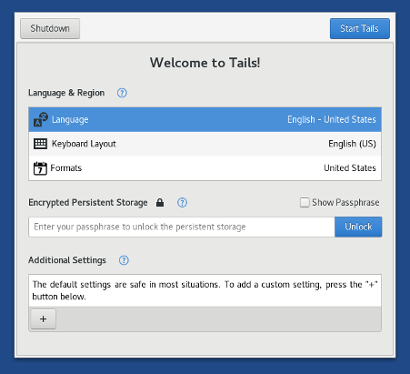
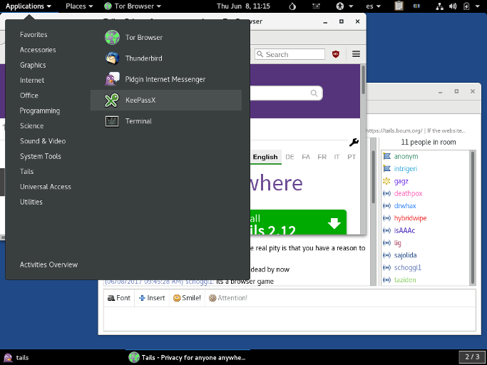
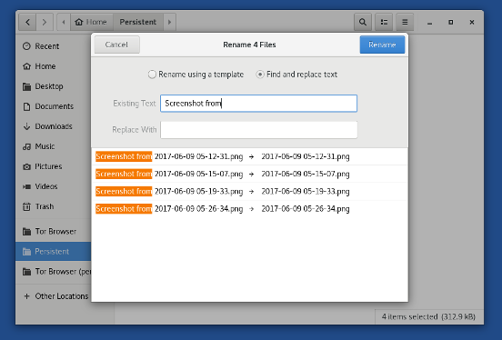
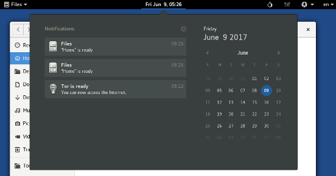

We are especially proud to present you Tails 3.0, the first version of Tails based on Debian 9 (Stretch). It brings a completely new startup and shutdown experience, a lot of polishing to the desktop, security improvements in depth, and major upgrades to a lot of the included software.
Debian 9 (Stretch) will be released on June 17. It is the first time that we are releasing a new version of Tails almost at the same time as the version of Debian it is based upon. This was an important objective for us as it is beneficial to both our users and users of Debian in general and strengthens our relationship with upstream:
- Our users can benefit from the cool changes in Debian earlier.
- We can detect and fix issues in the new version of Debian while it is still in development so that our work also benefits Debian earlier.
This release also fixes many security issues and users should upgrade as soon as possible.
Mudanças
Novos recursos
New startup and shutdown experience
Tails Greeter, the application to configure Tails at startup, has been completely redesigned for ease of use:
- All options are available from a single window.
- Language and region settings are displayed first to benefit our international audience.
- Accessibility features can be enabled from the start.
This has been a long process, started three years ago with the UX team of NUMA Paris and lead only by volunteers. Join us on tails-dev@boum.org to participate in future designs!

The shutdown experience has also been redesigned in order to be:
- More reliable. It was crashing on various computers with unpredictable results.
- More discrete. The screen is now totally black to look less suspicious.
Technically speaking, it is now using the freed memory poisoning feature of the Linux kernel.
Polishing the desktop
We switched to the default black theme of GNOME which has a more modern and discrete look:

Tails 3.0 benefits from many other small improvements to the GNOME desktop:
Files has been redesigned to reduce clutter and make the interface easier to use. Several new features have been added, such as the ability to rename multiple files at the same time and the ability to extract compressed files without needing a separate application.

The notification area has been improved to allow easy access to previous notifications. Notification popups have also been repositioned to make them more noticeable.

Shortcut windows have been added to help you discover keyboard shortcuts in GNOME applications.
For example, press Ctrl+F1 in Files to display its shortcut window.
Security improvements in depth
Tails 3.0 works on 64-bit computers only and not on 32-bit computers anymore. Dropping hardware support, even for a small portion of our user base, is always a hard decision to make but being 64-bit only has important security and reliability benefits. For example, to protect against some types of security exploits, support for the NX bit is compulsory and most binaries are hardened with PIE which allows ASLR.
Start any Tails version.
To open a terminal choose .
Execute the following command to display system information:
uname -mIf the output is
x86_64, your computer is 64-bit and Tails 3.0 should work.If the output is
i686, your computer is 32-bit and Tails 3.0 will not work.
- Update Tor Browser to 7.0.1 (based on Firefox 52 ESR) which is multiprocess and paves the way to content sandboxing. This should make it harder to exploit security vulnerabilities in the browser.
Major upgrades to included software
- Most included software has been upgraded in Debian 9, for example:
- KeePassX from 0.4.3 to 2.0.3
Your password database will be migrated automatically to the new format of KeePassX 2. - LibreOffice from 4.3.3 to 5.2.6
- Inkscape from 0.48.5 to 0.92.1
- Audacity from 2.0.6 to 2.1.2
- Enigmail from 1.8.2 to 1.9.6
- MAT from 0.5.2 to 0.6.1
- Dasher from 4.11 to 5.0
- git from 2.1.4 to 2.11.0
- KeePassX from 0.4.3 to 2.0.3
Atualizações e mudanças
The Pidgin tray icon was removed from the top navigation bar and replaced by popup notifications.
Icedove was renamed as Thunderbird, its original name, inheriting this change from Debian.
The search box and the search feature of the address bar of the Unsafe Browser were removed. (#12540)
The read-only option of the persistent storage was removed. It was used by very few users, created confusion, and lead to unexpected issues. (#12093)
Problemas resolvidos
The new X.Org display server in Tails 3.0 should work on more newer graphical hardware.
UEFI boot has been fixed on some machines (ThinkPad X220).
MAC spoofing has been fixed on some network interfaces (TP-Link WN725N). (#12362)
Para mais detalhes, leia nosso changelog.
Problemas conhecidos
Tails Installer erroneously rejects some USB sticks. When this happens, a message that starts with "Skipping non-removable device" is displayed (#12696). To workaround this problem:
Start the operating system you want to use Tails Installer on.
If you want to use Tails Installer in Tails 3.0, set up an administration password.Choose to open a terminal with administration rights.
Execute the following command to fix the bug in Tails Installer:
perl -pi -E 's,media_removable,removable,' /usr/lib/python2.7/dist-packages/tails_installer/creator.py
Tails Installer should not expose this problem again… until you restart Tails, as these changes will be reverted upon restart.
Tails fails to start on some computers with Intel graphical hardware.
Some users have reported problems during the migration from Icedove to Thunderbird, in particular that Thunderbird doesn't start.
If this happens to you, please send us a WhisperBack report without restarting Tails.
Veja a lista de problemas de longa data.
Get Tails 3.0
Para instalar, siga nossas instruções de instalação.
To upgrade, all users have to do a manual upgrade.
O que vem por aí?
Tails 3.1 is scheduled for August 8.
Confira o nosso roadmap e veja nossos objetivos futuros.
We need your help and there are many ways to contribute to Tails (donating is only one of them). Come talk to us!